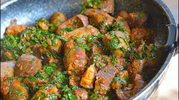

Usavi Recipe

Description
The process of cooking Zimbabwe's most popular relish to go with the staple food.
Ingredients
- Covo or Rape vegetables
- Cooking oil
- Onions
- Tomatoes
- Salt
- Water
Steps
- Cut the vegetables into thin strips
- Put cooking oil in a frying pan and heat it
- Cut the onion and tomatoes
- Add the vegetable strips into the pan
- Fry as you add a little water
- Add onion, tomatoes and salt
- Yeah! It's ready to serve.